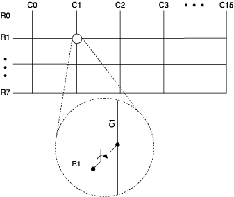

Use the NI TB-2632/2632B terminal block with the NI PXI-2530/2530B as a 1-wire 8×16 matrix.
The following figure represents the NI PXI-2530/2530B in the 1-wire 8×16 matrix topology.

Both the scanning command, r1->c1;, and the immediate operation, niSwitch Connect Channels VI or the niSwitch_Connect function with parameters r1 and c1, result in the following connection:
signal connected to R1 is routed to C1
Refer to the NI PXI-2530 Signal Connections section for the NI PXI-2530 front connector pinout and NI TB-2632 terminal mapping. Refer to the NI PXI-2530B Signal Connections section for the NI PXI-2530B front connector pinout and NI TB-2632B terminal mapping.